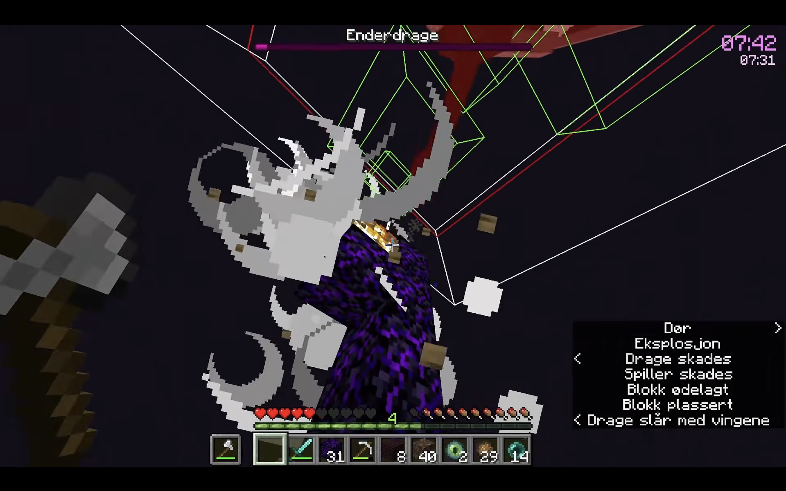
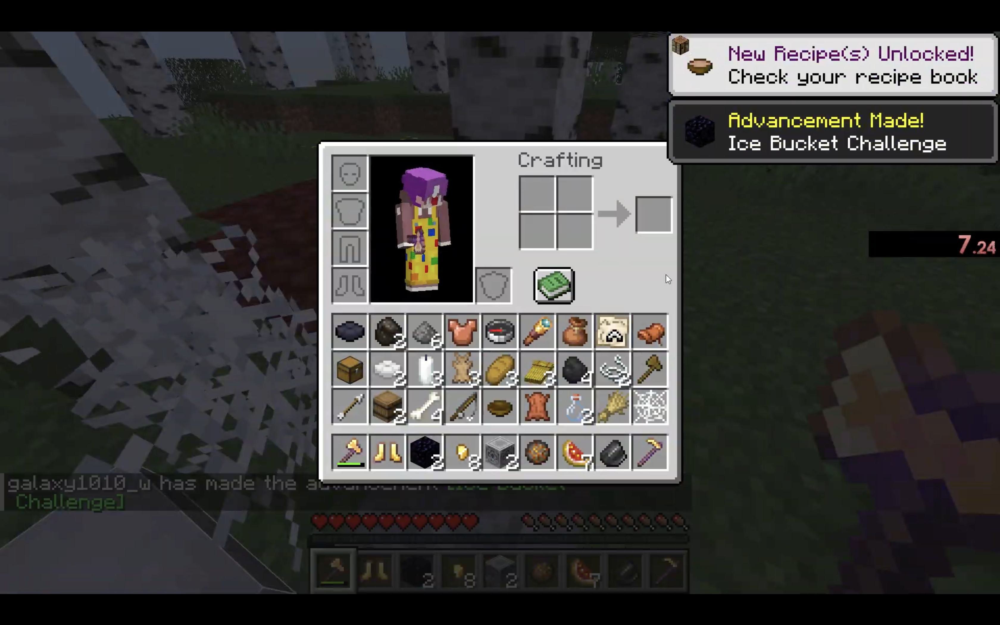

서비스 소개
마인크래프트 스피드런은 정해진 룰대로 게임을 최대한 빠르게 클리어하는 것을 목표로 하는 플레이 방식입니다.
이 페이지에서는 스피드런을 처음 접하는 사람도 기본적인 진행 방법과 필요한 정보를 쉽게 확인할 수 있습니다.

무작위로 생성된 시드에서 엔딩 크레딧을 빠르게 띄우는 RSG Any%(제공: dwoh)

정해둔 시드에서 보관함 칸을 빠르게 채우는 SSG Full Inventory(제공: galaxy1010_w)
주요 기능
스피드런 기본 정보
스피드런은 다양한 종목들이 있으며, 저마다 규칙이 조금씩 다릅니다.
가장 인기 있는 종목은 Any%로, 마인크래프트의 최종 보스인 엔더 드래곤을 잡은 후
나타나는 엔딩 크레딧을 빠르게 보는 것이 목표입니다.
그 외에도 인벤토리(보관함) 다 채우기, 모든 색상 양털 모으기 등 다양한 분야가 있습니다.
Any% Glitchless 진행 과정(인기종목)
(Glitchless: 버그를 이용하지 않고 진행하는 종목, ex: RSG, SSG)
오버월드: 도구와 네더 차원에 입장하기 위한 포탈을 제작할 재료를 모아서 네더에 입장합니다.
바스티온: 가까이에 있는 바스티온으로 이동하여 피글린이라는 몬스터와 거래해 필요 아이템을 얻습니다.
포트리스: 바스티온과 가장 가까운 포트리스를 찾고 블레이즈를 잡아 엔더유적에 가기 위한 재료를 얻습니다.
블라인드: 오버월드로 돌아와 엔더유적의 위치를 계산하고 빠르게 이동합니다.
엔더의 눈을 제작하여 엔드 포탈을 활성화하고 엔드 차원으로 이동합니다.
엔드: 버그 등을 제외한 방법으로 드래곤을 처치하고 엔딩 크레딧을 띄웁니다.
초보자 팁
무작정 빠르게만 하려고 하면 실수하거나 막히는 경우가 많으므로,
기술들과 미리 알고 있어야 할 정보들을 충분히 숙지한 후 파트별로 연습합니다.
이용 방법
1. 기본 정보 확인하기
먼저 자신이 하고 싶은 스피드런 종목과 규칙을 확인합니다.
2. 진행 과정 알아보기
스피드런이 어떤 순서로 진행되는지 확인합니다.
3. 직접 플레이하기
바스티온 라우트 등 자신이 연습해야 할 부분을 먼저 부분별로 나눠 연습합니다.
의견 남기기
페이지에 대한 의견을 남겨주세요.